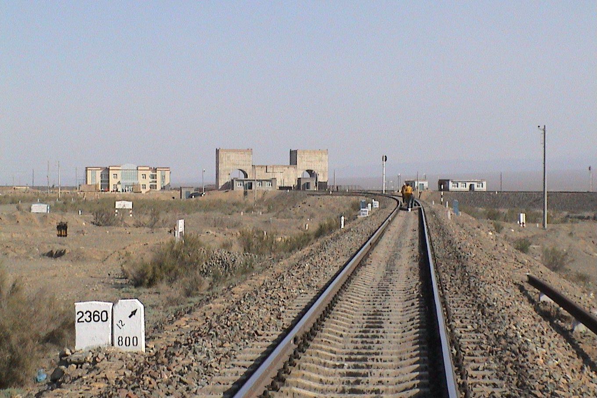

Kazakh companies sign about $100 million of export deals on the first day of China's import expo
About 40 Kazakh producers are showing food products at the China International Import Expo in Shanghai.


Kazakh food producers signed contracts to sell to Chinese buyers at a large trade fair in Shanghai.
Kazakh companies signed agreements worth about $100 million on 5 November, the first day of the 9th China International Import Expo (CIIE) in Shanghai, Kazakhstan's Ministry of Trade and Integration said. About 40 producers are in the national pavilion, showing vegetable oils, flour, confectionery, dairy products and drinks. The expo runs until 10 November.
The trade minister, Arman Shakkaliyev, led the delegation. The same report puts trade between the two countries at $43.3 billion in the first nine months of 2026, up 21.9% on a year earlier, after $48.7 billion in the whole of 2025.
The $48.7 billion for 2025 is the figure in Chinese customs data. Kazakhstan's own statistics show $34.1 billion for the same year; the trade brief on this site explains the gap. Food is a small part of what Kazakhstan sells to China, which is mostly ores, oil and metals, so deals like these are a test of whether exports can widen beyond raw materials.


.jpg){kind=link}